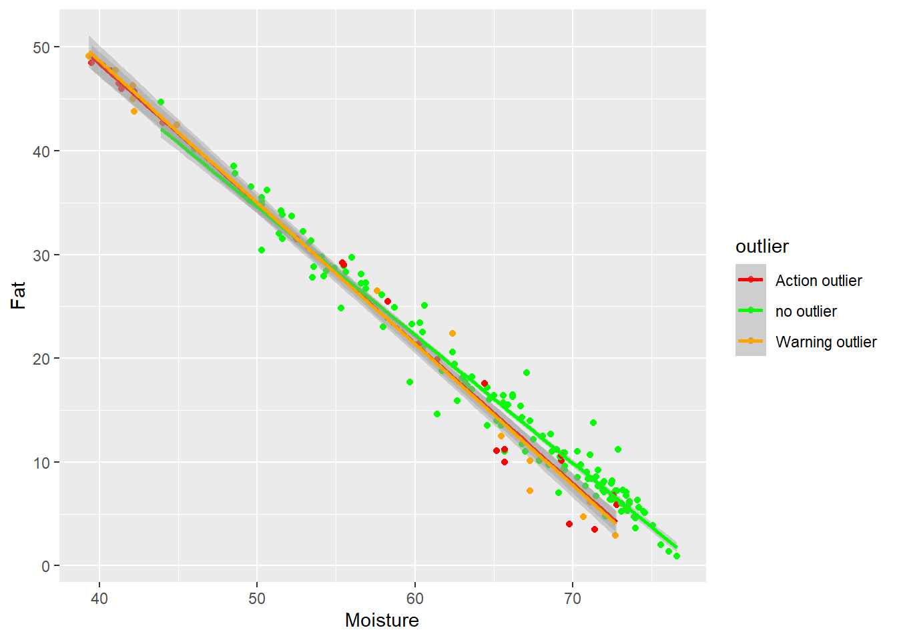
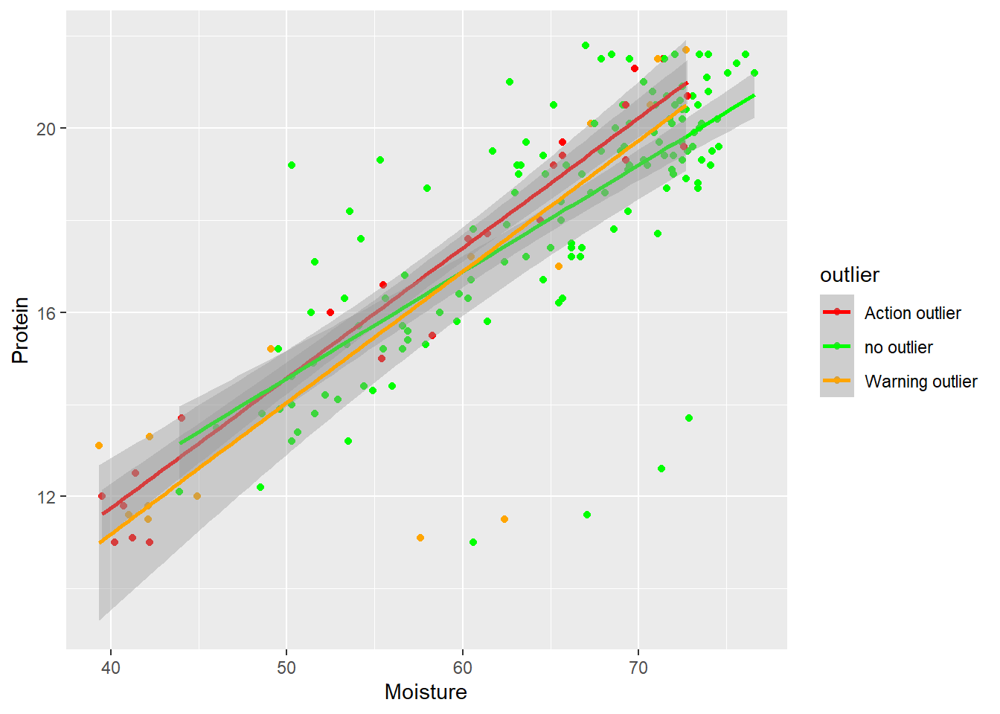
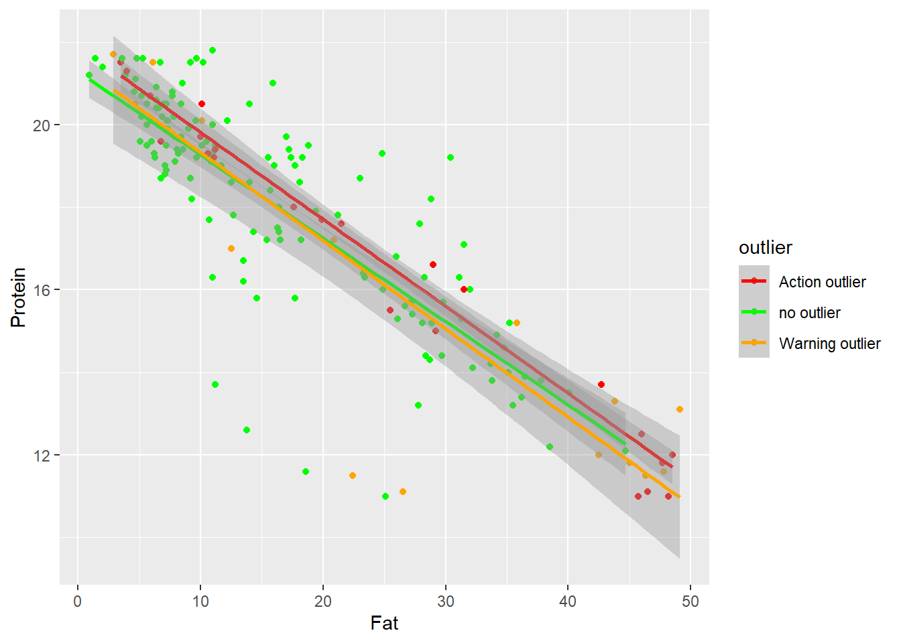
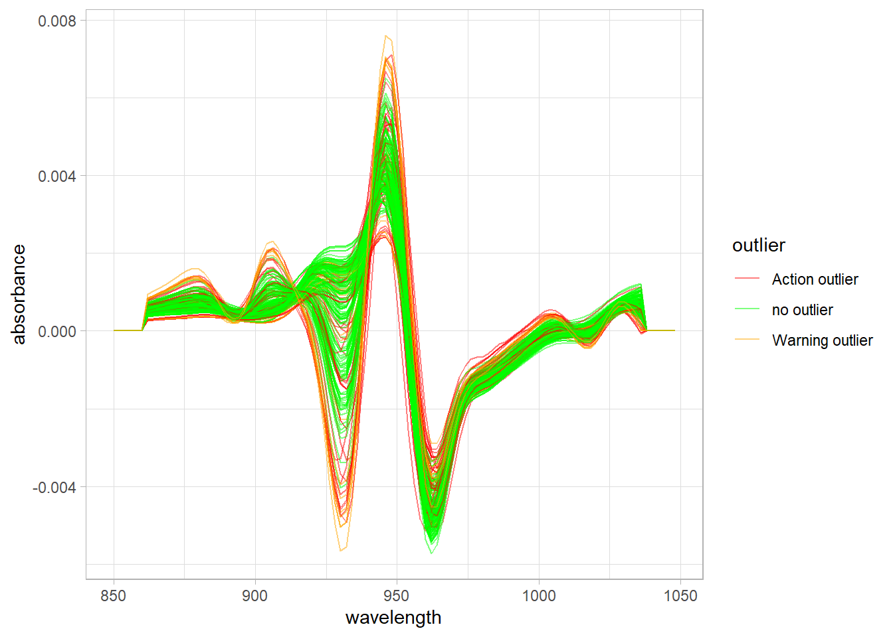

load("C:/BLOG/Workspaces/NIT Tutorial/NIT_ws11.RData")
library(tidyverse)In a previous post (from this tutorial) we have seen the intercorrelation plots between parameters and we have seen some outliers (they did not follow the trend), but are those samples mahalanobis distance spectral outliers, for the math treatment used?. Now we can go back to that point and check it.
Let`s start by loading our workspace and the libraries we are going to use:
Moisture vs Fat
tecator2 %>%
ggplot(aes( x = Moisture, y = Fat, color = outlier)) +
geom_point() +
geom_smooth(method = lm, size = 1) +
scale_color_manual(values = c("no outlier" = "green",
"Warning outlier" = "orange",
"Action outlier" ="red"))
In this case we can see how the extreme samples (with high fat and low moisture are action or warning outliers), and that some of the high moisture - low fat outliers dis not follow the trend.
Moisture vs Protein
tecator2 %>%
ggplot(aes( x = Moisture, y = Protein, color = outlier)) +
geom_point() +
geom_smooth(method = lm, size = 1) +
scale_color_manual(values = c("no outlier" = "green",
"Warning outlier" = "orange",
"Action outlier" ="red"))
in this case we do not see that almost all the low moisture - low protein are marked as outliers, but the rest of the outliers (except two warning) follow the trend.
Fat vs Protein
tecator2 %>%
ggplot(aes( x = Fat, y = Protein, color = outlier)) +
geom_point() +
geom_smooth(method = lm, size = 1) +
scale_color_manual(values = c("no outlier" = "green",
"Warning outlier" = "orange",
"Action outlier" ="red"))
it seems the same case than Protein vs Moisture.
Relation between the spectra pattern an the Mahalanobis distance ranges
Other observation we can do is with the spectra math treated giving colors to the spectra math treated, and looking if we see some patterns: (First we have to do some work removing the prefix (snvdt2der2_spec.)to the wavelength headers).
tecator3 <- bind_cols(tecator2$SampleID, tecator2$snvdt2der2_spec, tecator2$outlier)
colnames(tecator3) <- c("SampleID", seq(850, 1048, 2), "outlier")tecator3 %>%
pivot_longer(cols = c(2:101),
names_to = "wavelength",
values_to = "absorbance") %>%
mutate(wavelength = as.integer(str_extract(wavelength, "[:digit:]+"))) %>%
ggplot(aes(x = wavelength, y = absorbance, group = SampleID, color = outlier)) +
geom_line(alpha = 0.5) +
scale_color_manual(values = c("no outlier" = "green",
"Warning outlier" = "orange",
"Action outlier" ="red")) +
theme_light()
In the spectra we can see how the warning and action mahalanobis distance outliers are also extreme vs. the absorbance values. We have to take into account that these absorbances have a relationship with the concentration of the parameters: Fat, Moisture and Protein.
Now we save the workspace to use in the next post.
save.image("C:/BLOG/Workspaces/NIT Tutorial/NIT_ws12.RData")